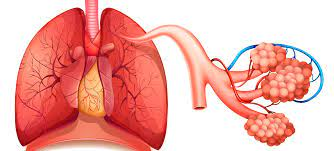

| Hay una variedad de enfermedades y trastornos que pueden llegar dañar los pulmones y puede impedir su buen funcionamiento. Estas son algunas enfermedades: |
| El EPOC o la fibrosis pulmonar: | |
|  | Es una enfermedad pulmonar obstructiva crónica (EPOC) es común. La EPOC causa dificultad para respirar |
| Hipertensión pulmonar: | |
| Cuando los vasos sanguíneos de los pulmones se engrosan, se contraen o se destruyen, resulta más difícil que la sangre fluya por los pulmones. En consecuencia, aumenta la presión arterial en los pulmones | |